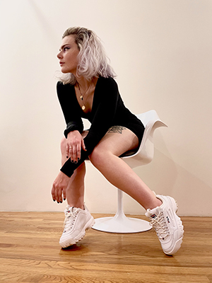
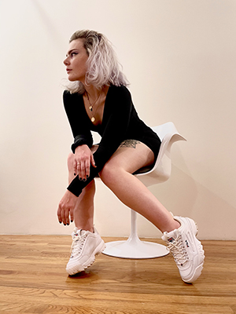

Hi! My name is Samantha Pankratz and I am an Atlanta based Creative Technologist. My last name is often pronounced “pan cakes”, “pack rat”, or even “pan cats”. I enjoy building, developing, and designing fully functioning websites. I love techy things and all things that involve the internet. When I am feeling kinda lazy I enjoy drinking coffee while watching horror gameplays on Youtube. Udon is also my favorite food that makes my heart and tummy warm. I believe women are shaping the future of technology and I want to become part of that statistic.